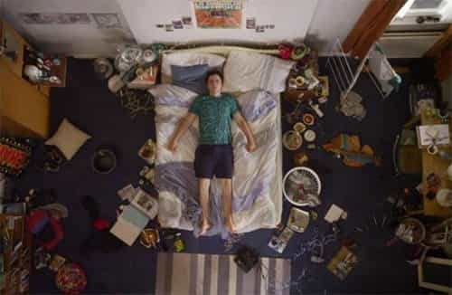

André is a young European who left his decaying country in 2012 for greener pastures. He enjoys exploring subterranean places, reading about a host of interconnected topics, and yearns for Tradition.


The twentysomething, basement-dwelling guy has become an archetype of the loser. Usually, one lives in a basement because one has no friends with whom he can share a rented flat or no money to rent something at all. Living in a basement also makes it difficult to receive anyone, especially hypergamous females.
On the opposite, being a nomad is cool because it signals more or less the exact opposite features. If you live as a nomad, you must be able to handle a lot of daily inconveniences, to take care of the unexpected, free to choose where you go. If you live as a nomad, you can live without the crutches of usual comfort. Today, living or having lived the nomadic lifestyle is often taken as a signal of self-reliability and competence. Those who travel to pick up girls get a bit of the lifestyle, and they usually learn more than those who stay at home, and some like Roosh have managed to embrace nomadism as a whole lifestyle for years.
As for myself, I am about to put an end to four months of a really nomadic, not to say bohemian, lifestyle. For four months, I have been living in three different countries, got hosted by various friends and family members, and though such a way to live has important drawbacks, it is also highly formative. Reflecting on my immediate past experience, here are important things I have learned. Most of the time, I already had an idea of these before walking around, but experience recalled or embodied these.
Owning too much stuff leads to having your home and shelves overfilled. Most of said stuff was usually more expensive when you bought it than today, and most of it is also useless. Do you really need a collection of plastic miniatures or DVDs? Instead, embrace a minimalist lifestyle: less dust, more space, more place for creativity as you have to fulfill the now empty space, and more money as you stop buying junk. When one travels a lot, one quickly gets tired of being forced to bring weighty or voluminous stuff everywhere he goes, to the point of resenting having too many clothes.
The only thing I allow myself to carry plenty of is books. Depending on the weather and on who I plan to see, presents from afar, valuable alcohol and specific clothes (like winter clothes or three-pieces suit) can find their place in the bags. Everything else is non-necessary, burdening, and should be avoided.
Even if you are living the minimalist lifestyle, traveling outside the beaten path always mean you will have to use both strength and endurance. Sometimes you go from France, where good wine is cheap, to a country where you can sell the same wine twice or thrice the price, or give it to a friend, and then you find yourself carrying a 60-lbs luggage. Sometimes you get late and must walk fast to get on board before the train or plane leaves. Sometimes the underground escalating subways are out of service and you have to carry these luggages all by yourself. And, sometimes, you might be tired of walking and carrying, but there’s a gorgeous girl out there and it may be great to pick her up.
The unexpected and the difficult are always around the corner, especially when you hop in new places. Whatever comes, it will be much easier to handle if you are in shape. I have never seen an accomplished traveller with a flabby physique. Couchsurfing events are sometimes crowded by bobos, but all of those who are actually traveling (and not merely throwing themselves to another local party) are at least in decent shape.
Having one’s own space and time is crucial. There are public spaces and there are private ones, there are moments for gathering or working with and for others as well as moments when you can do whatever you want. Even the Chinese near-slaves who toil fourteen hours a day at the factory and sleep in cage “homes” have at least their own cages.
Living in other people’s place mean you are occupying their space and meddling with their routine, not yours. They may be accommodating, and you may be graceful to their patience, but a time will come when you will feel the need to have your own space and time rather than being negotiating for some. If you don’t do so, people around will invade whatever you are doing, preventing you from ever be focused, and you will turn nervous and tired because you can’t live according to your own rhythm. When you know you will have something important to do, ask your host about his schedule or spot the useful semi-public spaces such as libraries, coffee shops or parks. A host with no schedule and no sense of boundaries can be a living nightmare you will be thankful not to depend too much from.
Traveling means you have a lot of things to think about: schedule, stuff to bring with you, money, places to visit, tasks to perform, training, seduction opportunities, paperwork… It is very easy to get overwhelmed by the sheer amount of things to remember or do. This is stressful, and if you fail to organize these, you may forget to do or bring things that matter. I have already forgotten to pay the rent on time or to take what I had just bought at the market, not because it was heavy, but because I was overburdened with stuff to think about.
When you travel, make lists. Objects to buy, people to remember, tasks to perform, openers or topics of conversation if you need some reminder for picking up girls. Even the least important thing can be important enough to be written down, at least once you have cared about the essential (see point 1).

The lifestyle one follows has a conditioning effect on what one does, can do, will do easily and thinks one can do. When you get hosted by various people, you get directly in the middle of their lifestyle. The sheer fact of having passed over others’ homes allowed me to witness a lot of ways to live: from the wanker student whose whole family lives on welfare and who spends six hours a day playing video games to the maniac old woman yelling at me for letting a drop of water in the shower cubicle after use, not to forget the cool guy whose house was such a mess only half of the sofa could be used (the other half having been irremediably stained by a manures of a pet parrot), there are a lot of ways life can be lived, and they are far from being equal.
Witnessing a lot of different lifestyles and going through each allows you to evaluate the pros and cons. For example, keeping one’s home minimally clean is good, but being a total maniac who will scoff at the least grain of dust or drop of water shows overemphasizing petty things over more important ones.
Also, turning one’s home into a party center endowed with various sofas, a big hi-fi stereo and drinks can help to become popular, but it may also be at the expense of reading books, and if you aren’t careful enough about who passes over you may end up exploited by freeloaders. Having been through various lifestyle makes you able to actually choose among a lot of things you would either have taken for granted or never thought about as possible.
We can and must strive for independence. Not depending from someone else or from things outside one’s control means being able to choose self-determination. Yet, whatever your trade and the extent of your skills, you need to at least trade with other people and are far better off if you can actually trust at least some people than if you live in a state of perpetual defiance. This is especially true when you depend on someone else to take shelter for the night or store something of yours.
This is why individualism, that “fancy word for personal selfishness,” must be kept in check and not merely by formal laws or the economy. This is also why the left should not be let in control of too much capital: I once looked at the Couchsurfers who lived in Paris and the sheer view of their smug Leftists faces made me wish I would never depend on them for anything, lest sleeping at their home. Being frequently hosted does not merely make you more dependent from selected others, it actually reminds you how dependent you are—and how dependent they are as well, the dependence principle working in all directions.
Being dependent from others does not (necessarily) mean you are weak and deprived of control. It means, however, that said others should be ashamed if they have bad behaviors, such as sluttiness for women and indiscriminate assholery for men, because their acts have consequences. If you get hosted, you need to be able to trust the one who gets you in his territory, and if you host, you need to be able to trust the one who will meddle in your territory. It works both ways. Even if you manage to wield a lot of power, you need to trust minimally those who work for or depend on you. Thus, even when we look for self-reliance and self-determination, we should always be keen to reward good behavior and chastise bad one, moral relativism be damned.
Some people are meant to live a nomadic lifestyle. Others are of a more sedentary character. For the latter, roaming could be a normal part of an initiation process: the young knights or aristocrats had to tour Europe, the compagnons (craftsmen) would spend youth years working in various places, ancient ascetics let everything behind, and the uninitiated still made a point to go to a pilgrimage to Jerusalem or Santiago de Compostela. This was an integral part of the traditional world, and this made much sense.
Travelling forces one to let behind comfort, to distinguish the essential from the accessory, to meet foreign but sociable ways, to get accustomed to minimalism, to face dangers, and at the same time to entertain curiosity about what is going around. The initiate’s travel was meant to be a crucible, an ordeal for discoveries and self-purification—something very different from the American melting pot, sometimes wrongly called a crucible, which leads individuals to materialistic consumerism and promotes miscegenation.
Many of us find or have found one day, usually after teenage years, that we were born and raised as weaklings. We can attribute this weakness to a host of causes, some biological (water supplies poised with chemicals, reduced testosterone, an excessively sedentary life-), some familial or educational (the lack of father figures, being raised by mothers and cultural Marxists), some others cultural (constant leftist guilt-tripping, anti-white and anti-male propaganda daily). We are not responsible for said weakness and may rightfully advocate for these harms to be recognized and compensated.
Yet we are responsible for getting ourselves out of this dreadful state and going forward in life. There is much to be done if we want to only equate our ancestors. Traveling, roaming, wandering is part of the process. Only after having taken the ordeal, no matter how long, can we sustain a household—and, even more, a whole social orientation like neomasculinity—and keep burning the sacred fire at the center of the place we can truly call a home.
Read More: 5 Steps To Living Like A Nomad